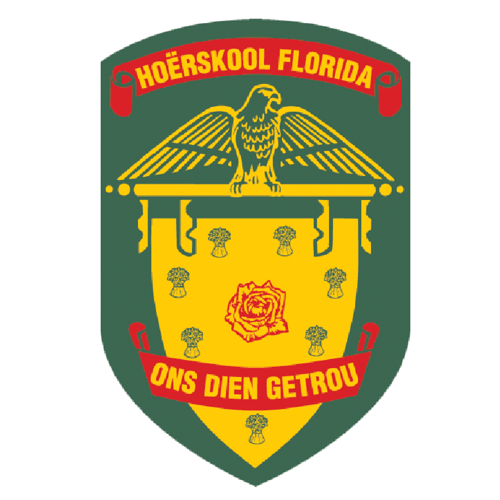

About
Hello World, My name is Armandie Joubert and I am part of DVT's 2020 graduate program. I finished my studies in the year 2019 at Vega School of Brand Leadership and studied a Bachelor of Arts in Creative Brand Communications specialising in Multimedia Design.
My personal brand is called grit. I believe that the best creatives aren't always the most talented, but they're brave, they're authentic, they're courageous, they're determined, and they've got grit.
What is grit?
Grit is the ability to persist in something you feel passionate about and persevere when you face obstacles. This kind of passion is not about intense emotions or infatuation. It’s about having direction and commitment. When you have this kind of passion, you can stay committed to a task that may be difficult or boring. Grit is also about perseverance. To persevere means to stick with it; to continue working hard even after experiencing difficulty or failure.
Need some grit in your life ? Contact me
Interests
Experience
UX/UI Design Intern
DVT.Internship
Feb 2020 - Present. 1 month
Education

Vega School
Bachelor of Arts in Creative Brand Communications
Specialised in Multimedia Design
2017 - 2019

Hoërskool Florida
National Senior Certificate
2011 - 2015